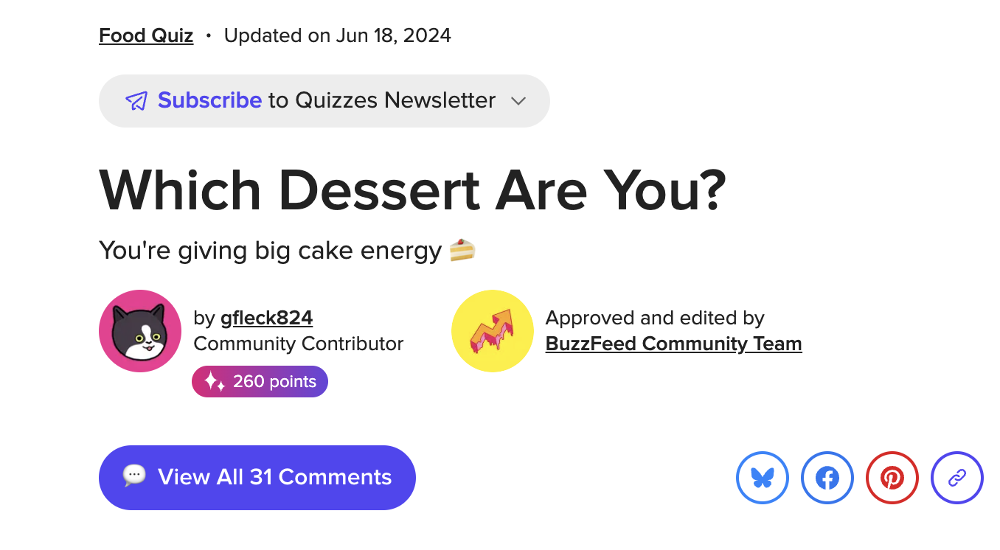
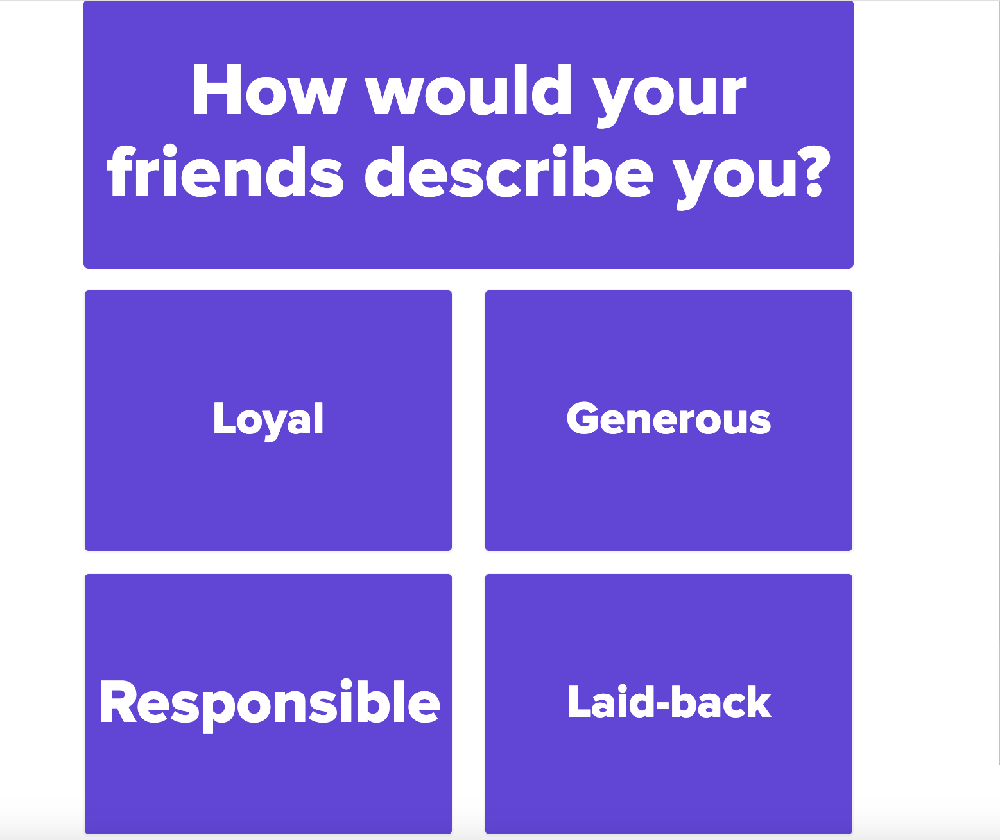

What dessert are you?
Growing up, my friends and I loved sitting at the computer and entering websites like Buzzfeed or Sporcle for fun personality questionnaires where your favorite ice cream flavor could tell you which character in Gossip Girl you were. This post explores if AI can provide the same satisfactory experience!
It’s time to see if AI can decipher “which dessert I am†with some basic questions!

A Buzzfeed quizzes of this nature

Prompting ChatGPT about this..
Prompt
so i grew up taking buzzfeed quizzes that would be like: What dog are you?
And ask questions like your favorite color, food, sport, and subject in school to determine what dog you were! I was thinking, we should play a similar game, with colors and images and all, where you ask me questions to determine what dessert I am!
Response
YES I love this idea!! Let’s play “What Dessert Are You?†— BuzzFeed style, with ✨vibes✨, fun images, and chaotic energy.
I’ll ask you a few questions, and at the end I’ll reveal what dessert you are (with a whole moodboard and description, of course 🍰). Let’s gooo:
Moment of Truth: The quiz with GPT4o.
1. What’s your ideal weekend plan?
A. Cozy night in with a book or show
B. Brunch with friends and a little shopping
C. Spontaneous road trip or hike
D. Dancing all night, obviously
2. Pick a color palette:
- 🩵🤍💙 (cool, calm, serene)
- 💖🍑💛 (sweet, sunny, pastel)
- 🌈🔥🌿 (bold, eclectic, energetic)
- 🖤💄🷠(dramatic, luxe, mysterious)
3. Choose your favorite subject in school (vibe, not actual grade):
A. Literature or art
B. Psychology or history
C. Science or gym
D. Theater or music
4. You walk into a bakery. What’s the first thing that catches your eye?
A. A flaky croissant
B. A pastel layer cake
C. A messy, gooey brownie
D. A macaron tower
5. Finally, what’s your red flag in a group project?
A. Overthinking the aesthetic instead of starting
B. Doing the whole thing yourself because no one else will
C. Disappearing for a week then coming back with everything done
D. Turning it into a performance (with music)
Answer with your A/B/C/D choices and I’ll tell you your dessert alter ego 🍦👀
Prompt
Yay! 1. D 2. B 3. B 4. C 5. B
Response
Oooooh you are a Strawberry Shortcake Trifle 🍓✨
Your dessert energy: You’re effortlessly layered — sweet, charming, and full of depth. On the outside, you’re all soft colors and chill vibes, but underneath? You’ve got layers of loyalty, passion, and chaotic brilliance. People trust you to get things done (and you will, even if it kills you a little inside). You’re the friend who remembers everyone’s birthdays, organizes the group trip, and still somehow has time to romanticize life with a pastel iced latte in hand.
Flavor notes: Sweet strawberries, whipped cream confidence, sponge-cake reliability, and a hint of “don’t mess with me or the dessert spoon comes out.”
You give: Main character energy but in a soft girl way. Think Elle Woods if she also majored in emotional intelligence. 💅
Want to play again with a different theme? (What Pasta Are You? What Candle Scent Matches Your Aura? What Type of Cloud Reflects Your Conflict Style? I can go all day 😌)
 Typical question format on Buzzfeed quizzes
My reflection
I think ChatGPT did a pretty good job at this! It asked me questions that were very similar to how Buzzfeed asks them and I felt like I got an overall comparable experience. The only thing lacking was images, colorblocks, and other aesthetic features that make the quiz more enjoyable for a younger audience. With a few graphic design changes, this can be a great alternative to the original Buzzfeed quizzes, especially in a fun customizable way!